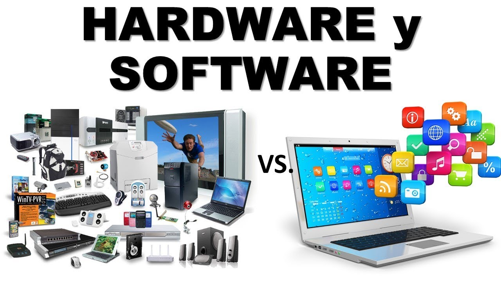
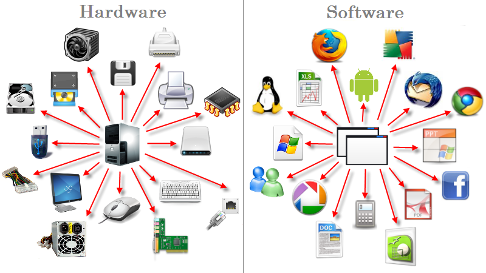
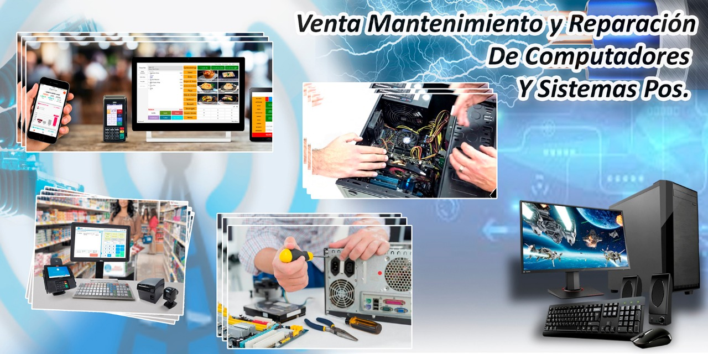

Existen dos grandes enemigos de las computadoras, estos son; el calor y la humedad. El exceso de calor acelera el deterioro de los delicados circuitos de tu computadora. Las causas más comunes del recalentamiento son el polvo y la humedad: los conductos de ventilación y los ventiladores tupidos pueden bloquear la circulación del aire en el interior de la cubierta, y hasta la capa de polvo más delgada puede elevar la temperatura de los componentes de tu computadora .
Por eso es necesario mantener tu sistema limpio por dentro y por fuera, para lo cual es recomendable realizar servicios de mantenimiento periódico.

Es la parte que puedes ver y tocar de los dispositivos. Es decir, todos los componentes de su estructura física como pantallas y teclados.
Estos son los programas informáticos que hacen posible la ejecución de tareas específicas dentro de un computador. Por ejemplo, los sistemas operativos, aplicaciones, navegadores web, juegos o programas.
Estas características siempre trabajan de la mano. Mientras el software aporta las operaciones, el hardware es el canal físico por el cual dichas funciones pueden realizarse.
Aunque aún no tengamos idea de cómo evolucionen las cosas, esta combinación seguirá funcionando como la base del desarrollo tecnológico.

Revisión del software instalado.
Desfragmentación de disco duro.
La eliminación de archivos temporales.
Liberación de espacio en el disco duro.
Liberación de memoria RAM.
Revisar el correcto funcionamiento del antivirus.
Realizar copias de seguridad.
Limpiar la papelera de reciclaje.
Recomendaciones para mantener nuestra computadora a punto:
Realizar respaldos de los datos almacenados.
Instalar las actualizaciones de seguridad de nuestro sistema operativo.
Mantener nuestras aplicaciones actualizadas.
No instalar software inestable o de dudosa procedencia.
Navegar la web de manera responsable.
Limpiar nuestros datos de navegación cada cierto tiempo.
Casi todas estas recomendaciones se pueden aplicar en la mayoría de los Sistemas Operativos, aunque siempre debemos tener especial cuidado con el Malware en Microsoft Windows, ya que este afecta nuestra computadora utilizando múltiples métodos.
